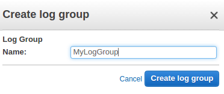

CloudWatch & Logs with Lambda Function / S3
In this article, we'll learn about CloudWatch and Logs mostly from AWS official docs. Then, we'll try Lambda function triggered by the S3 creation (PUT), and see how the Lambda function connected to CloudWatch Logs using an official AWS sample.
Amazon CloudWatch provides robust monitoring of our entire AWS infrastructure, including EC2 instances, RDS databases, S3, ELB, and other AWS resources.
We will be able to track a wide variety of helpful metrics, including CPU usage, network traffic, available storage space, memory, and performance counters.
AWS also provides access to system and application logs, and custom alarms that provides near real time notification when specific metrics appear in the logs, or when certain events take place, such as low disk space.
Pic. source How Amazon CloudWatch Works
Dashboards can also be created to display graphs and statistics.
Note that Amazon CloudWatch does not aggregate data across regions. Therefore, metrics are completely separate between regions.
Amazon CloudWatch is basically a metrics repository. An AWS product-such as Amazon EC2—puts metrics into the repository, and we retrieve statistics based on those metrics. If we put our own custom metrics into the repository, we can retrieve statistics on these metrics as well.
We can access CloudWatch using any of the following methods:
- We can use metrics to calculate statistics and then present the data graphically in the CloudWatch console - https://console.aws.amazon.com/cloudwatch/
- AWS CLI
- CloudWatch API
- AWS SDKs
We can use Amazon CloudWatch Logs to monitor, store, and access our log files from Amazon Elastic Compute Cloud (Amazon EC2) instances, AWS CloudTrail, and other sources. We can then retrieve the associated log data from CloudWatch Logs.
- Monitor Logs from Amazon EC2 Instances in Real-time.
- Monitor AWS CloudTrail Logged Events.
- Archive Log Data.
We can use CloudWatch Logs to monitor applications and systems using log data.
For example, CloudWatch Logs can track the number of errors that occur in our application logs and send us a notification whenever the rate of errors exceeds a threshold we specify.
CloudWatch Logs uses our log data for monitoring; so, no code changes are required. For example, we can monitor application logs for specific literal terms (such as "NullReferenceException") or count the number of occurrences of a literal term at a particular position in log data (such as "404" status codes in an Apache access log). When the term we are searching for is found, CloudWatch Logs reports the data to a CloudWatch metric that we specify.
Log data is encrypted while in transit and while it is at rest.
We can publish log data from Amazon EC2 instances running Linux or Windows Server, and logged events from AWS CloudTrail. CloudWatch Logs can consume logs from resources in any region, but we can only view the log data in the CloudWatch console in the regions where CloudWatch Logs is supported.
We can use the CloudWatch Logs agent installer on an existing EC2 instance to install and configure the CloudWatch Logs agent. After installation is complete, the agent confirms that it has started and it stays running until we disable it.
Here is our policy attached to our new role, MyCloudWatchLogsRole:
{
"Version": "2012-10-17",
"Statement": [
{
"Effect": "Allow",
"Action": [
"logs:CreateLogGroup",
"logs:CreateLogStream",
"logs:PutLogEvents",
"logs:DescribeLogStreams"
],
"Resource": [
"arn:aws:logs:*:*:*"
]
}
]
}
We may need to attach the role to an existing instance:

The process for installing the CloudWatch Logs agent differs depending on whether our Amazon EC2 instance is running Amazon Linux, Ubuntu, CentOS, or Red Hat. We'll use Ubuntu 16 instance using the following procedure to manually install the CloudWatch Logs agent on our instance:
-
$ cd /tmp $ curl https://s3.amazonaws.com//aws-cloudwatch/downloads/latest/awslogs-agent-setup.py -O $ sudo apt install python
The CloudWatch Logs agent installer requires certain information during set up. Before we start, we need to know which log file to monitor and its timestamp format. We should also have the following information ready:
$ sudo python ./awslogs-agent-setup.py --region us-east-1 Launching interactive setup of CloudWatch Logs agent ... Step 1 of 5: Installing pip ...DONE Step 2 of 5: Downloading the latest CloudWatch Logs agent bits ... DONE Step 3 of 5: Configuring AWS CLI ... AWS Access Key ID [****************Role]: MyCloudWatchLogsRole AWS Secret Access Key [****************Role]: MyCloudWatchLogsRole Default region name [us-east-1]: Default output format [None]: Step 4 of 5: Configuring the CloudWatch Logs Agent ... Path of log file to upload [/var/log/syslog]: Destination Log Group name [/var/log/syslog]: Choose Log Stream name: 1. Use EC2 instance id. 2. Use hostname. 3. Custom. Enter choice [1]: Choose Log Event timestamp format: 1. %b %d %H:%M:%S (Dec 31 23:59:59) 2. %d/%b/%Y:%H:%M:%S (10/Oct/2000:13:55:36) 3. %Y-%m-%d %H:%M:%S (2008-09-08 11:52:54) 4. Custom Enter choice [1]: Choose initial position of upload: 1. From start of file. 2. From end of file. Enter choice [1]: More log files to configure? [Y]: N Step 5 of 5: Setting up agent as a daemon ...DONE
After we have completed these steps, the installer asks if we want to configure another log file. We can run the process as many times as we like for each log file. If we have no more log files to monitor, choose N when prompted by the installer to set up another log.
We can check if the agent is running:
$ ps aux | grep agent | grep -v color root 18254 0.0 0.1 4508 804 ? S Jun03 0:00 /bin/sh /var/awslogs/bin/awslogs-agent-launcher.sh
-
We should see the newly-created log group and log stream in the CloudWatch console after the agent has been running for a few moments:
-
If we need to edit our credentials, in the /var/awslogs/etc/aws.conf file and in the [default] section, specify the region where we want to view log data and add our credentials.
[plugins] cwlogs = cwlogs [default] region = us-east-1
Adding our credentials here is optional if our instance as launched using an IAM role or user with the appropriate permissions to use CloudWatch Logs. Note that we do not have credentials in the file because we used IAM role.
When we install the CloudWatch Logs agent on an Amazon EC2 instance using the steps in previous sections, the log group is created as part of that process. We can also create a log group directly in the CloudWatch console.
On CloudWatch console => choose Logs => choose Actions => Create log group:
Type a name for the log group, and then choose Create log group.
We can view and scroll through log data on a stream-by-stream basis as sent to CloudWatch Logs by the CloudWatch Logs agent. We can specify the time range for the log data we want to view.
To view log data:
- Open the CloudWatch console at https://console.aws.amazon.com/cloudwatch/.
- In the navigation pane, choose Logs.
- For Log Groups, choose the log group to view the streams.
- For Log Streams, choose the log stream name to view the log data.
- To change how the log data is displayed, do one of the following:
- To expand all log events, above the list of log events, choose Expand all.
- To expand all log events and view them as plain text, above the list of log events, choose Text.
- To filter the log events, type the desired search filter in the search field.
- To view log data for a specified date and time range, above the list of log events, choose custom. We can choose Absolute to specify a date and time range or Relative to choose a predefined number of minutes, hours, days, or weeks. We can also switch between UTC and Local timezone.

We can export log data from our log groups to an Amazon S3 bucket and use this data in custom processing and analysis, or to load onto other systems.
To begin the export process, we must create an S3 bucket to store the exported log data. We can store the exported files in our S3 bucket and define Amazon S3 lifecycle rules to archive or delete exported files automatically.
We can export logs from multiple log groups or multiple time ranges to the same S3 bucket. To separate log data for each export task, we can specify a prefix that will be used as the Amazon S3 key prefix for all exported objects.
Log data can take up to 12 hours to become available for export. For near real-time analysis of log data, we can use Real-time Processing of Log Data with Subscriptions instead.
We can use subscriptions to get access to a real-time feed of log events from CloudWatch Logs and have it delivered to other services such as an Amazon Kinesis stream or AWS Lambda for custom processing, analysis, or loading to other systems.
To begin subscribing to log events, create the receiving source, such as an Amazon Kinesis stream, where the events will be delivered.
A subscription filter defines the filter pattern to use for filtering which log events get delivered to our AWS resource, as well as information about where to send matching log events to.
CloudWatch Logs also produces CloudWatch metrics about the forwarding of log events to subscriptions.
AWS Lambda automatically monitors Lambda functions for us, reporting metrics through Amazon CloudWatch. To help us troubleshoot failures in a function, Lambda logs all requests handled by our function and also automatically stores logs generated by our code through Amazon CloudWatch Logs.
We can insert logging statements into our code to help us validate that our code is working as expected.
The following sample is from https://console.aws.amazon.com/lambda/home.
In this simple example, we create a Lambda function to consume events published by Amazon S3. For any object uploaded to a bucket, S3 will invoke our Lambda function by passing event information in the form of function parameters. AWS Lambda executes the function. As the function executes, it reads the S3 event data, logs some of the event information to Amazon CloudWatch. This is an example of "push" model where Amazon S3 invokes the Lambda function.
Picture credit : Using AWS Lambda with Amazon S3
The steps in the diagram can be summarized as the following:
- User uploads an object to an S3 bucket (object-created event).
- Amazon S3 detects the object-created event.
Amazon S3 invokes a Lambda function that is specified in the bucket notification configuration. When a Lambda function is invoked, AWS Lambda launches a container (that is, an execution environment) based on the configuration settings we provided.
It takes time to set up a container and do the necessary bootstrapping, which adds some latency each time the Lambda function is invoked. We typically see this latency when a Lambda function is invoked for the first time or after it has been updated because AWS Lambda tries to reuse the container for subsequent invocations of the Lambda function.
In our sample, we integrate Amazon S3 and AWS Lambda integration with non-stream based (async) model. This is a model, where Amazon S3 monitors a bucket and invokes the Lambda function by passing the event data as a parameter.
In this push model, we maintain event source mapping within Amazon S3 using the bucket notification configuration. In the configuration, we specify the event types that we want Amazon S3 to monitor and which AWS Lambda function we want Amazon S3 to invoke.
More specifically, in our case, the S3 publishes new object created event (Amazon S3 supports multiple APIs to create objects) when a specific API is used (e.g., s3:ObjectCreated:Put) or we can use a wildcard (e.g., s3:ObjectCreated:*) to request notification when an object is created regardless of the API used.
- AWS Lambda executes the Lambda function by assuming the execution role that we specified at the time we created the Lambda function. When AWS Lambda executes our Lambda function, it takes care of provisioning and managing resources needed to run our Lambda function.
- The Lambda function executes. After a Lambda function is executed, AWS Lambda maintains the container for some time in anticipation of another Lambda function invocation. In effect, the service freezes the container after a Lambda function completes, and thaws the container for reuse, if AWS Lambda chooses to reuse the container when the Lambda function is invoked again.
{
"Version": "2012-10-17",
"Id": "default",
"Statement": [
{
"Sid": "lc-15cfc0ae-eea1-480c-b31b-051710655125",
"Effect": "Allow",
"Principal": {
"Service": "s3.amazonaws.com"
},
"Action": "lambda:InvokeFunction",
"Resource": "arn:aws:lambda:us-east-1:526262051452:function:myLambda-S3",
"Condition": {
"StringEquals": {
"AWS:SourceAccount": "526262051452"
},
"ArnLike": {
"AWS:SourceArn": "arn:aws:s3:::bogo-aws"
}
}
}
]
}
Lambda automatically integrates with CloudWatch Logs and pushes all logs from our code to a CloudWatch Logs group associated with a Lambda function, which is named /aws/lambda/<function name>.
We can view logs for Lambda by using the Lambda console, the CloudWatch console, the AWS CLI, or the CloudWatch API. The following procedure show us how to view the logs by using the Lambda console.
from __future__ import print_function
import json
import urllib
import boto3
print('Loading function')
s3 = boto3.client('s3')
def lambda_handler(event, context):
#print("Received event: " + json.dumps(event, indent=2))
# Get the object from the event and show its content type
bucket = event['Records'][0]['s3']['bucket']['name']
key = urllib.unquote_plus(event['Records'][0]['s3']['object']['key'].encode('utf8'))
try:
response = s3.get_object(Bucket=bucket, Key=key)
print("CONTENT TYPE: " + response['ContentType'])
return response['ContentType']
except Exception as e:
print(e)
print('Error getting object {} from bucket {}. Make sure they exist and your bucket is in the same region as this function.'.format(key, bucket))
raise e

The policies attached to the role look like this:

Click "View logs in CloudWatch":
Click the Log group:
This section is based on Serverless Reference Architecture: Real-time File Processing
We can use a CloudFormation to launch a stack for a Lambda file processing reference architecture.
Here is the template : AWS-CloudFormation/lambda_file_processing.template
{
"AWSTemplateFormatVersion": "2010-09-09",
"Description": "CFN template to create architecture represented at https://aws.amazon.com/blogs/compute/fanout-s3-event-notifications-to-multiple-endpoints/.",
"Parameters": {
"CodeBucket": {
"Description": "S3 Bucket containing Lambda deployment packages and sub-stack templates",
"Type": "String",
"Default" : "awslambda-reference-architectures"
},
"CodeKeyPrefix": {
"Description": "The key prefix for all deployment packages and sub-stack templates within CodeBucket",
"Type": "String",
"Default" : "file-processing"
}
},
"Resources": {
"InputBucket": {
"Type": "AWS::S3::Bucket",
"Properties": {
"BucketName": {"Fn::Join" : ["-", [{"Ref" : "AWS::StackName"}, {"Ref" : "AWS::AccountId"}, "files"]]},
"NotificationConfiguration": {
"TopicConfigurations": [
{
"Event": "s3:ObjectCreated:*",
"Topic": { "Ref" : "InputNotificationTopic" }
}
]
}
},
"DependsOn": "NotificationPolicy"
},
"OutputBucket": {
"Type": "AWS::S3::Bucket",
"Properties": {
"BucketName": {"Fn::Join" : ["-", [{"Ref" : "InputBucket"}, "out"]]}
}
},
"InputNotificationTopic": {
"Type": "AWS::SNS::Topic",
"Properties": {
"Subscription": [
{
"Endpoint": {
"Fn::GetAtt": [
"ProcessorFunctionOne",
"Arn"
]
},
"Protocol": "lambda"
},
{
"Endpoint": {
"Fn::GetAtt": [
"ProcessorFunctionTwo",
"Arn"
]
},
"Protocol": "lambda"
}
]
}
},
"NotificationPolicy": {
"Type": "AWS::SNS::TopicPolicy",
"Properties": {
"PolicyDocument": {
"Id": "PushBucketNotificationPolicy",
"Version": "2012-10-17",
"Statement": [
{
"Sid": "AllowBucketToPushNotificationEffect",
"Effect": "Allow",
"Principal": {
"Service": "s3.amazonaws.com"
},
"Action": "sns:Publish",
"Resource": {
"Ref": "InputNotificationTopic"
},
"Condition": {
"ArnLike": {
"aws:SourceArn": {
"Fn::Join": [
"",
[
"arn:aws:s3:*:*:",
{"Fn::Join" : ["-", [{"Ref" : "AWS::StackName"}, {"Ref" : "AWS::AccountId"}, "files"]]}
]
]
}
}
}
}
]
},
"Topics": [
{
"Ref": "InputNotificationTopic"
}
]
}
},
"ProcessorFunctionOne": {
"Type": "AWS::Lambda::Function",
"Properties": {
"Code": {
"S3Bucket": { "Ref": "CodeBucket" },
"S3Key": {"Fn::Join" : ["/", [{"Ref": "CodeKeyPrefix"}, "data-processor-1.zip"]]}
},
"Description": "Data Processor One",
"Handler": "data-processor-1.handler",
"Role": {
"Fn::GetAtt": [
"LambdaExecutionRole",
"Arn"
]
},
"Runtime": "nodejs6.10",
"MemorySize": 128,
"Timeout": 3
}
},
"ProcessorFunctionTwo": {
"Type": "AWS::Lambda::Function",
"Properties": {
"Code": {
"S3Bucket": { "Ref": "CodeBucket" },
"S3Key": {"Fn::Join" : ["/", [{"Ref": "CodeKeyPrefix"}, "data-processor-2.zip"]]}
},
"Description": "Data Processor Two",
"Handler": "data-processor-2.handler",
"Role": {
"Fn::GetAtt": [
"LambdaExecutionRole",
"Arn"
]
},
"Runtime": "nodejs6.10",
"MemorySize": 128,
"Timeout": 3
}
},
"LambdaExecutionRole": {
"Type": "AWS::IAM::Role",
"Properties": {
"AssumeRolePolicyDocument": {
"Version": "2012-10-17",
"Statement": [
{
"Effect": "Allow",
"Principal": {
"Service": [
"lambda.amazonaws.com"
]
},
"Action": [
"sts:AssumeRole"
]
}
]
},
"Path": "/"
}
},
"RolePolicy": {
"Type": "AWS::IAM::Policy",
"Properties": {
"PolicyName": "root",
"PolicyDocument": {
"Version": "2012-10-17",
"Statement": [
{
"Effect": "Allow",
"Action": [
"logs:CreateLogGroup",
"logs:CreateLogStream",
"logs:PutLogEvents"
],
"Resource": "arn:aws:logs:*:*:*"
},
{
"Effect": "Allow",
"Action": [
"s3:GetObject"
],
"Resource": { "Fn::Join": ["", ["arn:aws:s3:::", { "Ref" : "InputBucket" }, "/*"]]}
},
{
"Effect": "Allow",
"Action": [
"s3:PutObject"
],
"Resource": { "Fn::Join": ["", ["arn:aws:s3:::", { "Ref" : "OutputBucket" }, "/*"]]}
}
]
},
"Roles": [
{
"Ref": "LambdaExecutionRole"
}
]
}
},
"LambdaInvokePermissionOne": {
"Type": "AWS::Lambda::Permission",
"Properties": {
"FunctionName" : { "Fn::GetAtt" : ["ProcessorFunctionOne", "Arn"] },
"Action": "lambda:InvokeFunction",
"Principal": "sns.amazonaws.com",
"SourceArn" : { "Ref" : "InputNotificationTopic" }
}
},
"LambdaInvokePermissionTwo": {
"Type": "AWS::Lambda::Permission",
"Properties": {
"FunctionName" : { "Fn::GetAtt" : ["ProcessorFunctionTwo", "Arn"] },
"Action": "lambda:InvokeFunction",
"Principal": "sns.amazonaws.com",
"SourceArn" : { "Ref" : "InputNotificationTopic" }
}
}
},
"Outputs": {
"Bucket": {
"Description": "Storage location for data which is to be processed by Lambda functions",
"Value": {
"Ref": "InputBucket"
}
},
"BucketOut": {
"Description": "Storage location for data which is to be processed by Lambda functions",
"Value": {
"Ref": "OutputBucket"
}
},
"Topic": {
"Description": "SNS topic to fanout S3 Event notifications to Lambda functions",
"Value": {
"Ref": "InputNotificationTopic"
}
},
"ProcessorFxOne": {
"Description": "Lambda function receiving SNS messages of S3 events",
"Value": {
"Ref": "ProcessorFunctionOne"
}
},
"ProcessorFxTwo": {
"Description": "Lambda function receiving SNS messages of S3 events",
"Value": {
"Ref": "ProcessorFunctionTwo"
}
}
}
}
We can use the following command to launch the stack using the AWS CLI. The provided CloudFormation template retrieves its Lambda code from a bucket in the us-east-1 region:
$ aws cloudformation create-stack \
--stack-name bogo-lambda-file-processing \
--template-url https://s3.amazonaws.com/bogo-aws/lambda_file_processing.template \
--capabilities CAPABILITY_IAM
After creating the stack using the CloudFormation template, we can test the system by uploading a Markdown file to the InputBucket that was created in the stack. We can use this README.md file in the repository as an example file. After the file has been uploaded, we can see the resulting HTML and plain text files in the output bucket of our stack. We can also view the CloudWatch logs for each of the functions in order to see the details of their execution.
$ BUCKET=$(aws cloudformation describe-stack-resource --stack-name bogo-lambda-file-processing --logical-resource-id InputBucket --query "StackResourceDetail.PhysicalResourceId" --output text) $ aws s3 cp s3://awslambda-reference-architectures/file-processing/example.md s3://$BUCKET/example.md
Now we have the following files in S3:
$ aws s3 ls s3://bogo-lambda-file-processing-526262051452-files 2017-07-02 21:45:35 5848 example.md $ aws s3 ls s3://bogo-lambda-file-processing-526262051452-files-out 2017-07-02 21:45:37 6801 example.html 2017-07-02 21:45:42 4779 example.txt
Now that the file has been uploaded to the input bucket, we can inspect the output bucket to see the rendered HTML and plain text output files created by the Lambda functions.
AWS (Amazon Web Services)
Ph.D. / Golden Gate Ave, San Francisco / Seoul National Univ / Carnegie Mellon / UC Berkeley / DevOps / Deep Learning / Visualization